*Los gráficos los hice con* @ggplot y @ggstatsplotCuarta Reunión
Referencias de forma automática
Como charlamos en la reunión anterior (INSERTAR LINK) existen tareas que nos demandan mucho tiempo :sparkles: carga, limpieza y orden de los datos :sparkles:. Otra de las tareas que consumen muchísimo tiempo y pueden realizarse de manera casi automática es la de citar y generar referencias de nuestro documentos. Y si a esto le sumamos que luego debemos formatear nuestras referencias, entonces el tiempo es mucho mayor.
A citar!
La buena noticia es que todo esto se puede hacer con R! En unos simples pasos van a poder obtener la informacion necesaria para genera la referencia y luego poder incluirla en el cuerpo del texto. Una vez alli solo resta elegir el formato y listo! Vamos por partes:
Paso 1: el archivo .bib
Lo primero que necesitamos es un archivo que le brinde a R los datos necesarios del documento que estemos utilizando. Algunos de esos datos son titulo, autores, año de publicación…En fin, todo eso que necesitamos para luego incluir en las referencias. Ese archivo fuente de datos bibliográficos puede ser un archivo BibLaTeX o un archivo BibTeX. En este caso vamos a usar el primero cuyo formato sera .bib. Para crear ese archivo tan solo debemos hacer click en el icono de generar nuevo archivo y luego seleccionar Text File como se muestra en la imagen de abajo
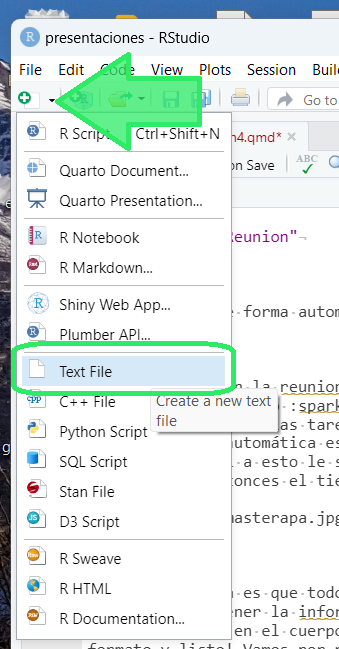
En este archivo vamos a incluir la información del documento ¿Dónde se consigue esa información? Eso puede realizarse manualmente copiando lo que nos arrojan paginas como Google Sholar. Para eso debemos buscar nuestro documento en la web. Luego se debe hacer click en el botón Citar
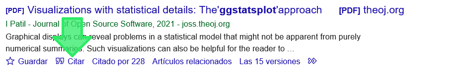
El navegador nos va a mostrar una ventana con las referencias y debajo de todo algunas opciones extra. Entre ellas se encuentra BibTex. Hacemos click en eso.
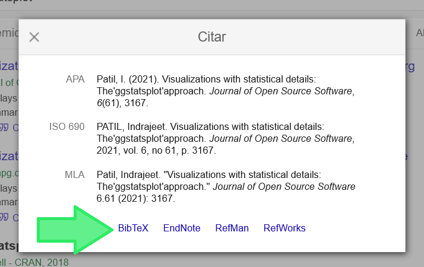
Una vez allí debemos seleccionar y luego copiar lo que aparece en el navegador.
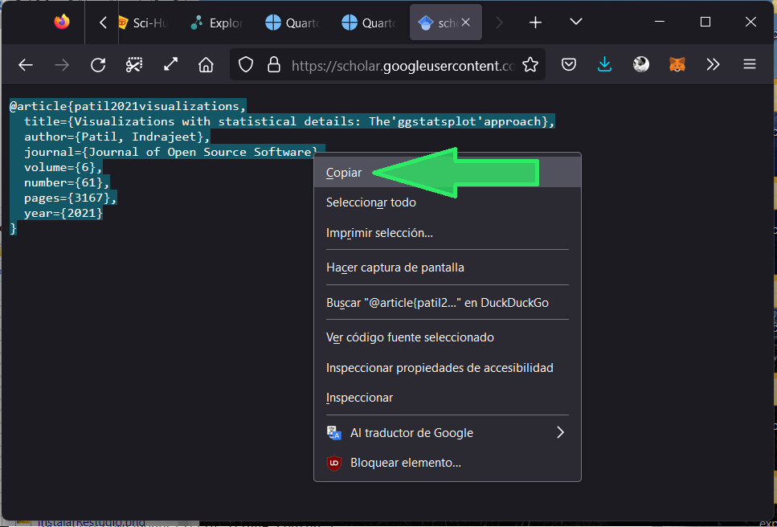
Copiada la información, entonces la pegamos en el archivo de texto que creamos al principio y le damos click a guardar.
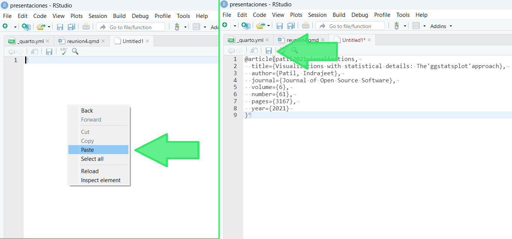
En la ventana de Guardar tenemos que ponerle un nombre al archivo (puede ser cualquier cosa, por ejemplo: biblio/bibliografia). Y ahora viene lo importante. Luego del nombre se debe escribir .bib. Para finalizar le damos click a guardar/save. Como resultado obtenemos nuestro archivo .bib con la informacion necesaria para citar luego.
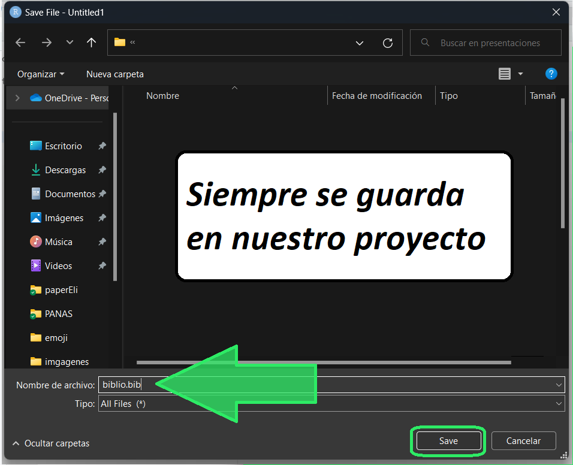
Paso 2: el formato (nuestro archivo .csl)
El archivo .csl es lo que le da el formato a la referencia. Entonces si necesitamos formato apa el csl tiene que ser el de la apa, si necesitamos formato MLA entonces tiene que ser el archivo csl que contenga la info para formatear la referencia en el estilo MLA. Así con todas. Hay archivos csl para todos los gustos y con el estilo necesario para distintos journals y agrupaciones. Nosotros nos vamos a enfocar en APA. Por lo tanto vamos a necesitar el csl de las normas apa.
Para conseguir el archivo podemos ir al Repositorio de Estilos de Zotero y buscar el formato APA. Una vez allí solo resta hacer click en donde muestra la ultima flecha y automáticamente se descargará el archivo .csl
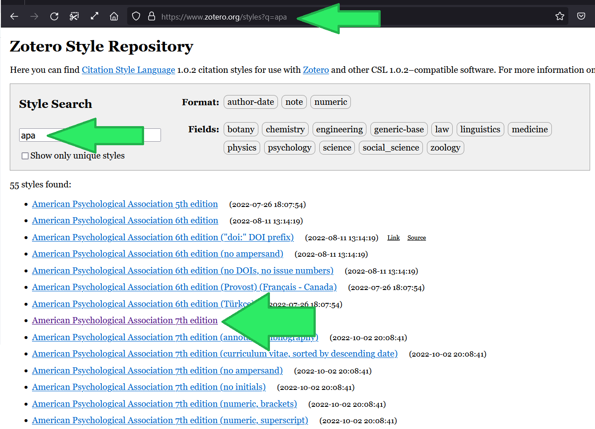
Aquí lo importante es que ese archivo que se descargó lo ubiquemos en nuestro proyecto. Por lo que nuestra sección Files de RStudio debería mostrar, entre todo lo demás, los dos archivos que agregamos recientemente: el archivo .bib y el archivo .csl
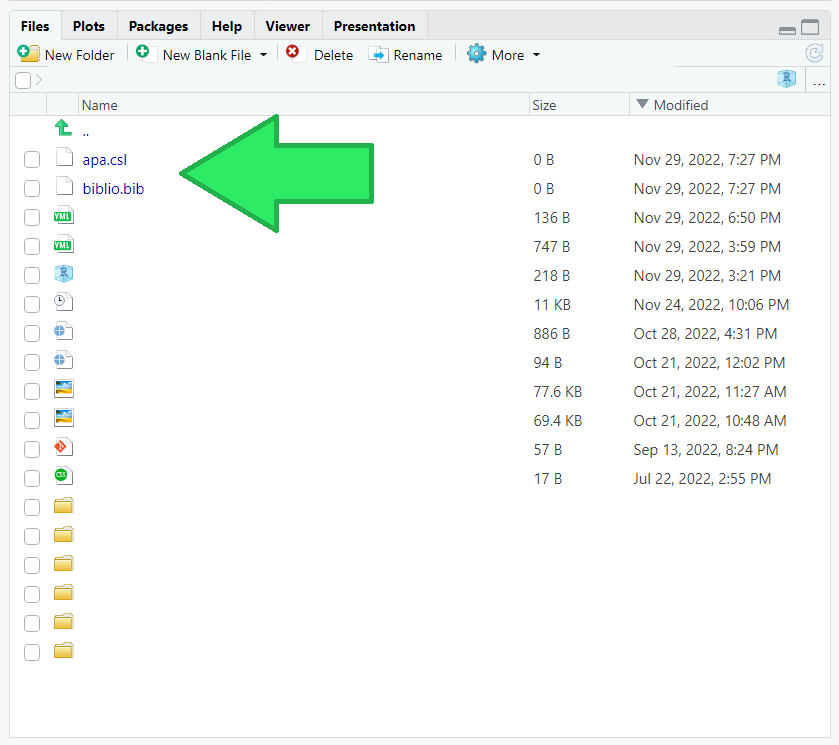
Paso 3: Agregar todo al YALM
Bueno, ya contamos con nuestros dos archivos. Ahora tenemos que indicarle a R que los lea. Para eso tenemos que agregarlo al principio del archivo en el YALM (esa sección entre --- donde también incluimos el título, autores, fecha etc…). Con agregar bibliography: biblio.bib y csl: apa.csl ya nos queda todo OK.
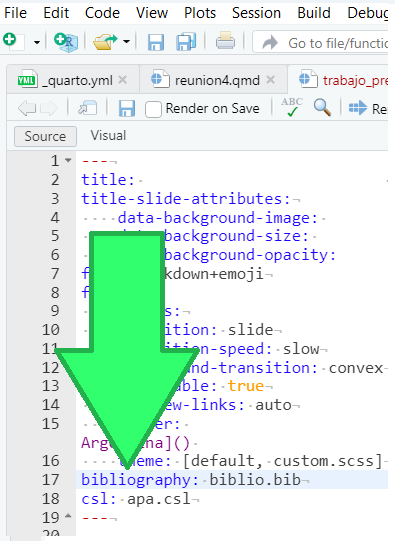
Paso 4: Agregar citas al texto
Una vez generados los archivos y configurado el yalm ya podemos incluir las citas en el texto. Para eso lo único que tenemos que hacer es llamar a la cita. Esto lo hacemos de la misma forma en la que, por ejemplo, etiquetamos/arrobamos a alguien en instagram o en twitter. Con tan solo escribir la @ y el nombre de la cita ya nos queda incluida en el texto.
Pero…¿Cuál es el nombre de la cita? Eso lo encontramos en el archivo .bib que creamos antes.
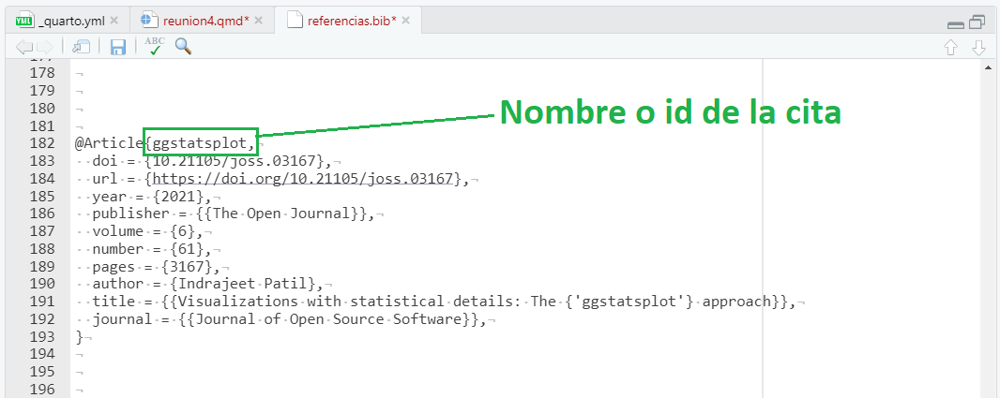
Ese nombre puede cambiarse por alguno que sea más fácil de recordar o que la identifique mejor. Por lo general ese nombre incluye autor y año de publicación. Uds. pueden escribir el que prefieran.
Otra forma muy útil y que viene con un mejor “diseño” es citar utilizando el modo visual que se ofrece en rmarkdown o quarto. En este modo, apenas se escribe @ se despliega un menú con todas las citas que tengamos cargadas en el archivo .bib. Seleccionamos la que queremos y listo!
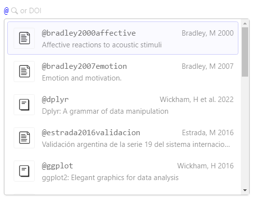
Bueno, ya tengo la cita en el texto. ¿Tengo que incluirla en la bibliografia al final del documento? No!
Pongamos un ejemplo con la siguiente frase:
Los gráficos los hice con @ggplot y @ggstatsplot
En este ejemplo podemos notar dos cosas. La primera es que se genero la cita con nombre del autor y el año incluido entre paréntesis. Ademas, si pasamos el puntero por arriba del año se va a mostrar una pequeña ventana con la referencia completa. La segunda es que si nos dirigimos al final de este sitio nos vamos a encontrar con un nuevo apartado que es el de las referencias. Ese apartado se genera automáticamente incluyendo todo lo que citemos y en el formato que especificamos en el csl del YALM. Un golazo, no?
Sintaxis para citar
| Forma de citar | Resultado |
|---|---|
@ggplot |
@ggplot |
[@ggplot] |
[@ggplot] |
[@ggplot; @ggstatsplot] |
[@ggplot; @ggstatsplot] |
| [-@ggplot] | [-@ggplot] |